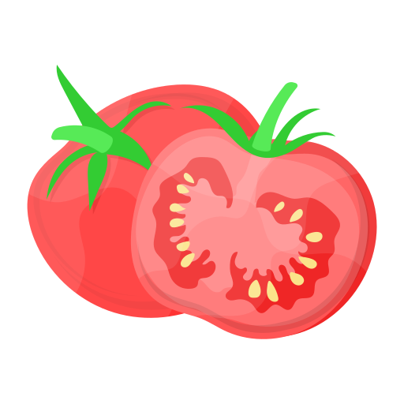
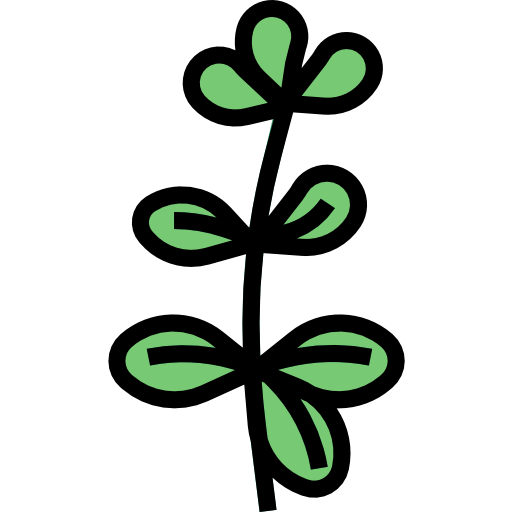
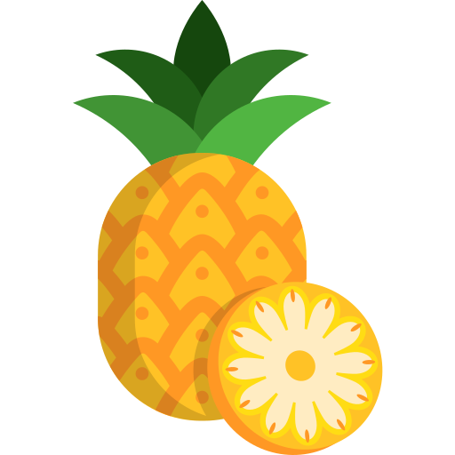
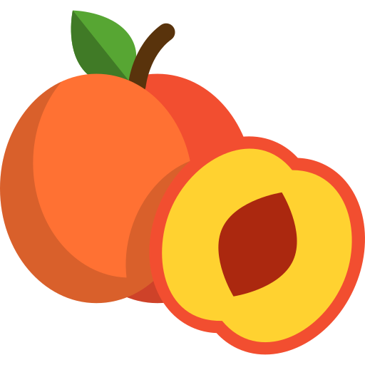
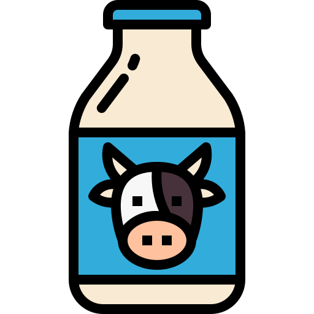
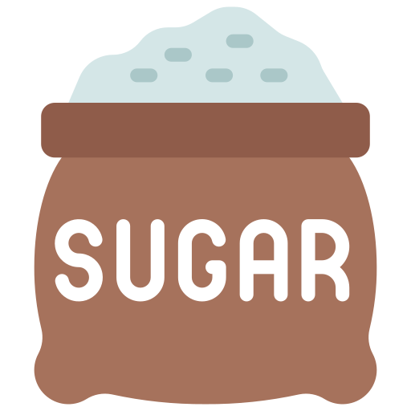

Légumes
Légumes-feuilles 
-
 Laitue romaine
(éviter la laitue iceberg)
Laitue romaine
(éviter la laitue iceberg)
-
 Épinards (avec
modération)
Épinards (avec
modération)
 Cresson
Cresson Roquette
Roquette- Pissenlit
 Persil
Persil Coriandre
Coriandre-
 Menthe
Menthe
- Basilic
- Fenouil
Légumes racines
- Carottes (en petites quantités)
- Navets (feuilles et racines)
Légumes-fruits
 Courgettes
Courgettes- Concombres
-
 Poivrons (toutes
les couleurs)
Poivrons (toutes
les couleurs)
-  Tomates (avec modération, sans les feuilles et les tiges)
Autres légumes

-
 Brocoli
(feuilles et tiges, éviter les fleurons en grande quantité)
Brocoli
(feuilles et tiges, éviter les fleurons en grande quantité)
- Céleri
-
 Choux de
Bruxelles
Choux de
Bruxelles
-
 Chou frisé
(kale)
Chou frisé
(kale)
 Endives
Endives-
 Chou-rave
(feuilles et bulbe)
Chou-rave
(feuilles et bulbe)
-
 Radis (feuilles
et racines, en petites quantités)
Radis (feuilles
et racines, en petites quantités)
Herbes aromatiques

- Persil
- Coriandre
-
Menthe
- Basilic
- Aneth
- Thym
- Romarin
- Origan
Fruits (en petites quantités)

- Pommes (sans les pépins)
 Bananes
Bananes- Fraises
 Framboises
Framboises Mûres
Mûres Myrtilles
Myrtilles-
 Poires (sans les pépins)
Poires (sans les pépins)
-  Ananas
 Mangues
Mangues-  Pêches (sans le noyau)
-
 Prunes (sans le noyau)
Prunes (sans le noyau)
- Melon
-
 Pastèque (sans les
pépins)
Pastèque (sans les
pépins)
Herbes et graminées
-
 Foin de
prairie
Foin de
prairie
-
Foin de
Timothy (foin de fléole des prés)
-
Foin de
luzerne (surtout pour les jeunes lapins)
- Pissenlit
 Trèfle
Trèfle-
 Herbe de blé
Herbe de blé
Autres

- Branches et feuilles de pommier (non traitées aux pesticides)
-
 Branches de
saule
Branches de
saule
-
 Branches de
noisetier
Branches de
noisetier
-
Feuilles de framboisier
-
 Feuilles de
mûrier
Feuilles de
mûrier
Aliments à éviter absolument
- Chocolat
-  Produits laitiers
-  Aliments sucrés ou gras
- Aliments salés
- Pommes de terre
- Rhubarbe
 Haricots
Haricots- Avocat
 Oignons
Oignons- Ail